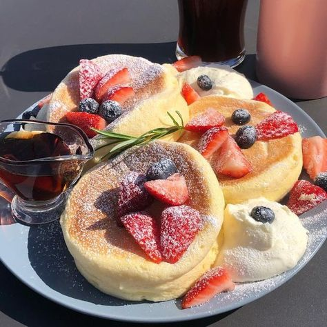

Japanese Souffle Pancakes

Description
Japanese Souffle Pancakes are a soft, airy cotton candy-like pancake dream come true. Dress them up in whipped cream or rain down the maple syrup – they come out delicious every which way!
Ingredients
- 2 egg yolks
- 3 egg whites
- 30 grams of flour
- 40 grams of sugar
- 3 tablespoons of milk
- 1 ½ tablespoons of oil
- ½ pack of vanilla sugar
- ½ pack of baking powder
Steps
-
Crack the eggs and put two yolks and half of the sugar in a bowl and whisk together.
-
Add milk and oil, then mix.
-
Gradually add the flour, vanilla sugar, and baking powder (preferably through a sieve so that no lumps are formed) and stir everything into a smooth dough.
-
In a second bowl, beat three egg whites and the remaining sugar with a mixer until stiff.
-
Gradually add the stiff egg whites to the dough and fold in. Caution: Do not stir too vigorously and allow some of the airiness to remain.
-
Now we move over to the stove. Add some oil in the pan and then — depending on the space — pour in the mixture into small circles. If you have round molds, the pancakes will look nicer, but it still works without them, they just expand a little more.
-
Bake the pancakes on low heat and add the lid to the pan for about 4-5 minutes. Make sure that the heat is not too strong, otherwise, the pancakes will burn.
-
Flip the pancakes over and cook for another 3-4 minutes.
-
To prevent the pancakes from collapsing, they should be served as soon as possible. They go well with powdered sugar, syrup, chocolate sauce, and fruit.